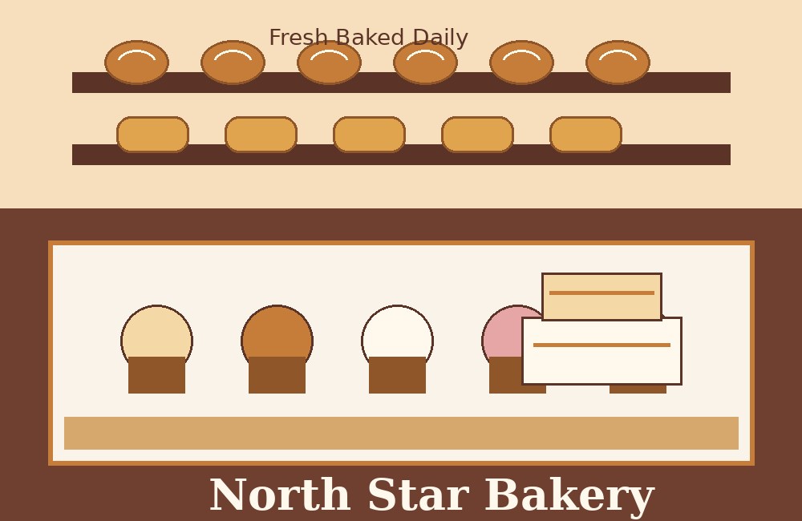

Cinnamon Rolls
Soft rolls with cream cheese icing, baked fresh every morning.
Fresh baked daily
North Star Bakery serves fresh bread, sweet treats, and made-to-order desserts for families, students, and local events.
Place an Order
Save treats you would like to order later.
Soft rolls with cream cheese icing, baked fresh every morning.
Birthday, graduation, and celebration cakes made with simple ordering.
Loaves and dinner rolls for weekday meals, holidays, and family gatherings.
No favorites yet. Choose a treat above.
Customers come to North Star Bakery because the menu is easy to understand, the shop feels welcoming, and ordering treats for family events is simple.